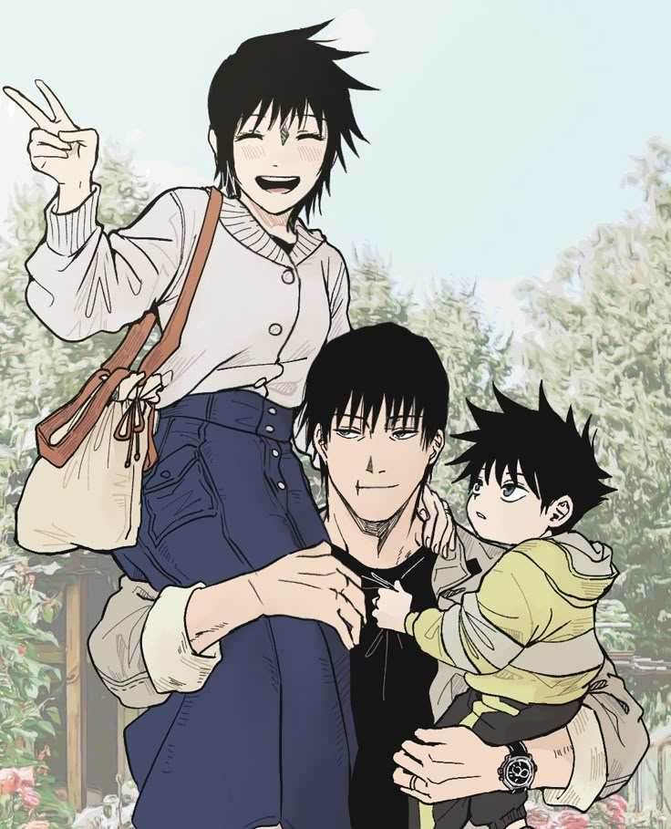
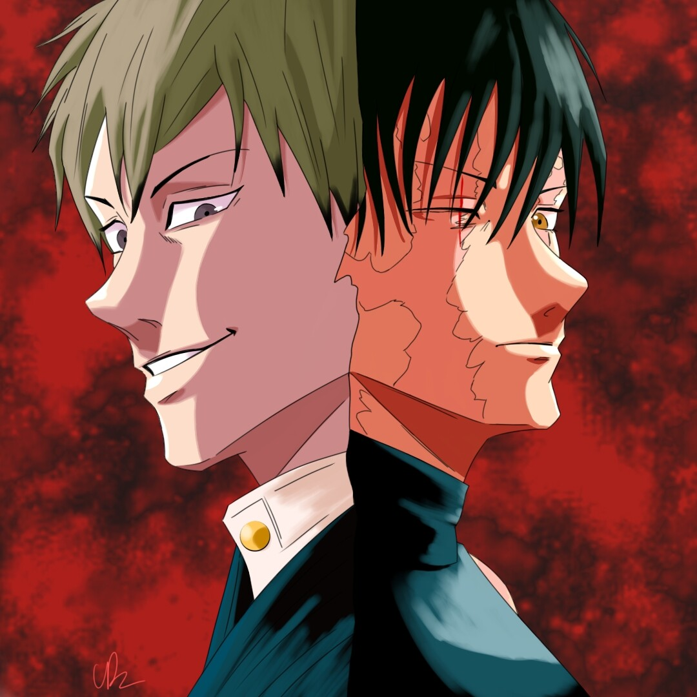

Mi mujer… fue de lo poco que no arruiné desde el principio. Con ella, por un momento, dejé de ser solo un arma. Me dio algo que no sabía que necesitaba… calma. Duró poco.
Megumi… es mi hijo. Tiene lo que a mí me faltó y, al mismo tiempo, carga con lo que yo desprecié. No estuve ahí para él. No lo crié. Pero hice lo único que podía hacer bien… asegurarme de que tuviera una oportunidad en este mundo.
No soy parte de su vida.
Pero, de alguna forma, siempre voy a estar en su sombra.

El clan Zenin… es el lugar del que vengo. Un lugar donde la gente como yo no tiene valor. No tengo nada que ver con ellos, pero no puedo negar que formaron parte de lo que soy. Me enseñaron lo que es ser débil y lo que es ser fuerte. Me enseñaron a odiar y a despreciar. Pero también me enseñaron a sobrevivir.
Los Zenin son mi pasado. No los elegí, pero tampoco los rechazo completamente. Son una parte de mi historia, aunque no definan quién soy.